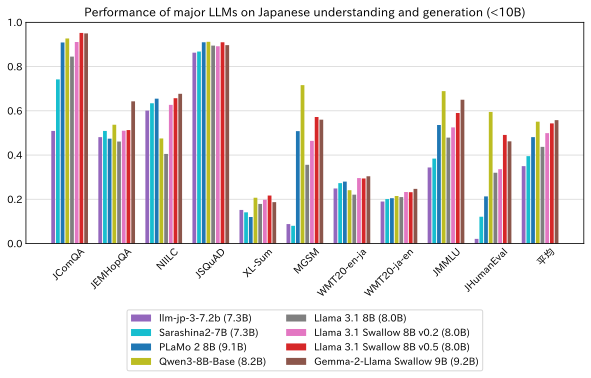
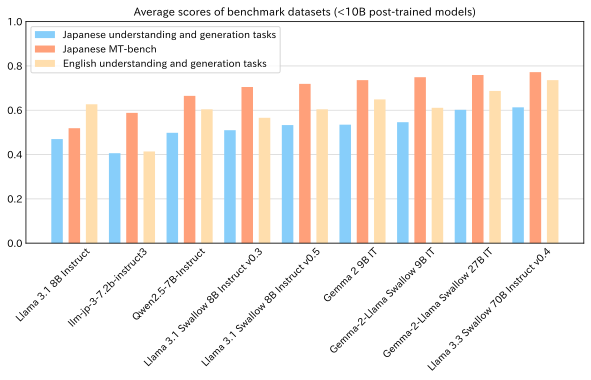

June 25, 2025
Llama 3.1 Swallow v0.5
Llama 3.1 Swallow 8B v0.5 is an LLM based on Llama 3.1 8B with enhanced Japanese capabilities. It can be used for research, commercial purposes, and more, as long as it complies with the Llama 3.3 license and does not violate the Gemma Terms of Use. Llama 3.1 Swallow 8B v0.5 was developed by the research team from the Okazaki Laboratory and Yokota Laboratory at Institute of Science Tokyo, in collaboration with the National Institute of Advanced Industrial Science and Technology (AIST). Built with Llama.

Latest models based on Llama 3.1
Models
License
The license for Llama 3.1 Swallow 8B v0.5 inherits from the Meta Llama 3.3 license. It can be used for research, commercial purposes, and more, as long as it complies with the Llama 3.3 license and does not violate the usage restrictions of the Gemma Terms of Use.
ChangeLog
- 2025-06-25: Released Llama 3.1 Swallow 8B v0.5. We applied and refined the latest recipe used in Llama 3.3 Swallow 70B v0.4 for continual pre-training of the Llama 3.1 8B model, improving its performance. Because Llama 3.3 outperforms Llama 3.1 for 70B-scale models, we have not developed a Llama 3.1-based 70B model. Therefore, the latest models are Llama 3.1 Swallow 8B v0.5 for 8B scale and Llama 3.3 Swallow 70B v0.4 for 70B scale.
Performance
The Swallow Project is conducting research and development with the goal of building a strong large language model (LLM) that excels in Japanese. Llama 3.3 Swallow 70B v0.4, released in March 2025, achieved performance approaching that of GPT-4o by improving the recipes for continued pretraining and post-training.
The newly released Llama 3.1 Swallow 8B v0.5 is an updated version of Llama 3.1 Swallow 8B, applying this improved recipe.
8B Base Models
How far can the performance of Llama 3.1 Swallow 8B improve with the Swallow team’s latest recipe? We compare open LLMs under 10B that support Japanese using 10 Japanese understanding and generation benchmarks that have been used by the Swallow team. The models compared in this evaluation are: llm-jp-3-7.2b (7.3B), Sarashina2-7B (7.3B), Llama 3.1 Swallow 8B v0.2 (8.0B), Llama 3.1 Swallow 8B v0.5 (8.0B), Qwen3-8B-Base (8.2B), PLaMo 2 8B (9.1B), Gemma 2 9B (9.2B), Gemma-2-Llama Swallow 9B (9.2B).

The key findings of the evaluation are as follows:
- Based on the average scores across Japanese understanding and generation benchmarks, the top-performing models were: Gemma-2-Llama Swallow 9B (0.558), Qwen3-8B-Base (0.551), and Llama 3.1 Swallow 8B v0.5 (0.543).
- Comparing Llama 3.1 Swallow 8B v0.2 and v0.5, the newer version improved scores in 8 out of 10 tasks. Notably, there were significant gains in code generation (JHumanEval, +0.155), mathematics (MGSM, +0.108), and general knowledge (JMMLU, +0.065). The remaining two tasks showed minimal change, suggesting that v0.5 should be used instead of v0.2.
- Comparing Qwen3-8B-Base and Llama 3.1 Swallow 8B v0.5, the former excels in mathematics (MGSM), general knowledge (JMMLU), and coding (JHumanEval), while the latter performs better in Japanese question answering (JComQA, NIILC) and Japanese-English/English-Japanese machine translation (WMT20).
Therefore, if strong performance in mathematics or coding is required, Qwen3-8B-Base is a good choice. If stronger Japanese capabilities are needed, Gemma-2-Llama Swallow 9B or Llama 3.1 Swallow 8B v0.5 is recommended.
Note: The JHumanEval score for PLaMo 2 8B varies significantly depending on whether a newline is appended at the end of the prompt. In the Swallow project’s evaluation, a newline is added at the end of prompts for all models. However, if the newline is not added, the JHumanEval score for PLaMo 2 8B improves from 0.213 to 0.397. Since the Swallow project adopts a uniform evaluation condition across all LLMs, the scores reported earlier are based on prompts with a newline appended.
8B Post-trained Models
Next, we evaluated the performance of Llama 3.1 Swallow 8B Instruct v0.5, an instruction-tuned model, on Japanese and English language understanding and generation tasks, as well as the Japanese MT-Bench (the evaluator used was gpt-4o-2024-08-06).
The models compared include: llm-jp-3-7.2b-instruct3, Qwen2.5-7B-Instruct, Llama 3.1 8B Instruct, Llama 3.1 Swallow 8B Instruct v0.3, Llama 3.1 Swallow 8B Instruct v0.5, Gemma 2 9B IT, Gemma-2-Llama Swallow 9B IT. Additionally, results for Gemma-2-Llama Swallow 27B IT and Llama 3.3 Swallow 70B Instruct v0.4 are included for reference. Note that, under the current evaluation framework, models with deeper reasoning capabilities cannot be fairly assessed. Therefore, distilled models from DeepSeek-R1 and Qwen3 LLMs are excluded from this evaluation. The Swallow team is currently working on a renewed evaluation framework tailored to instruction-tuned LLMs.

The key findings of the evaluation are as follows:
- Based on the average scores on the Japanese MT-Bench, the top-performing models were: Gemma-2-Llama Swallow 9B IT (0.749), Gemma 2 9B IT (0.736), Llama 3.1 Swallow 8B Inst v0.5 (0.719).
- Comparing Llama 3.1 Swallow 8B Inst v0.3 and v0.5, the latter showed improved average scores across Japanese understanding and generation tasks, English understanding and generation tasks, and Japanese MT-Bench. No tasks showed significant degradation, making v0.5 a better choice over v0.3.
Based on this evaluation, Gemma-2-Llama Swallow 9B IT and Llama 3.1 Swallow 8B Instruct v0.5 appear promising among LLMs of this scale. However, Qwen3-8B is expected to perform well although it has not yet been evaluated. We recommend examining the differences among these models before selecting one for use.
Method
Llama 3.1 Swallow 8B v0.5 is constructed using the following steps:
- Llama 3.1 Swallow 8B Base v0.5: Continual pretraining (Fujii et al., 2024) of Llama 3.1 8B (without vocabulary expansion).
- Llama 3.1 Swallow 8B Instruct v0.5: Supervised fine-tuning (SFT) of the Llama 3.1 Swallow Base v0.5 model.
The following corpora were used for continual pretraining:
- Cosmopedia
- Dclm-baseline-1.0
- English Wikipedia
- Japanese Wikipedia
- Laboro ParaCorpus
- Educationally valuable texts selected from Swallow Corpus Version 2
- Top 10% selected using a Wikipedia-based classifier from the Swallow Education Classifier
- Top 10% selected using an LLM-based classifier from the Swallow Education Classifier
- Japanese synthetic QA text generated from educationally valuable texts
- Swallow Code Version 1
- Swallow Math Version 1
For this continued pretraining, we used Amazon Web Services (AWS) SageMaker HyperPod (H200 x 4 nodes).
The following datasets were used for instruction tuning:
This dataset was created by translating the instructions from lmsys-chat-1m into Japanese and automatically generating responses using Gemma 3 27B IT. It is a newly developed and adopted instruction tuning dataset by the Swallow team.
References
- Kazuki Fujii, Taishi Nakamura, Mengsay Loem, Hiroki Iida, Masanari Ohi, Kakeru Hattori, Hirai Shota, Sakae Mizuki, Rio Yokota, and Naoaki Okazaki. Continual Pre-Training for Cross-Lingual LLM Adaptation: Enhancing Japanese Language Capabilities. In Proceedings of the First Conference on Language Modeling (COLM), October 2024.
- Naoaki Okazaki, Kakeru Hattori, Hirai Shota, Hiroki Iida, Masanari Ohi, Kazuki Fujii, Taishi Nakamura, Mengsay Loem, Rio Yokota, and Sakae Mizuki. Building a Large Japanese Web Corpus for Large Language Models. In Proceedings of the First Conference on Language Modeling (COLM), October 2024.
- Youmi Ma, Sakae Mizuki, Kazuki Fujii, Taishi Nakamura, Masanari Ohi, Hinari Shimada, Taihei Shiotani, Koshiro Saito, Koki Maeda, Kakeru Hattori, Takumi Okamoto, Shigeki Ishida, Rio Yokota, Hiroya Takamura, Naoaki Okazaki. Building Instruction-Tuning Datasets from Human-Written Instructions with Open-Weight Large Language Models. arXiv:2503.23714.
Acknowledgements
The research and development of the large language model Swallow has been supported by the AIST Project “Research and Development on Generative AI Foundation Models in the Physical Domain,” the “Core Integrated Technology Development for Next-Generation Artificial Intelligence and Robotics” project by the New Energy and Industrial Technology Development Organization (NEDO) (JPNP18002), specifically focusing on “Development of AI Application Technology for Decision Support in Design Risk Assessment Based on Expert Perspectives.” It is supported by a project from the Ministry of Education, Culture, Sports, Science, and Technology (MEXT) aimed at “establishment of research and development centers to ensure the transparency and reliability of generative AI models”, JSPS KAKENHI Grant Number 25H01137, along with other contributions.